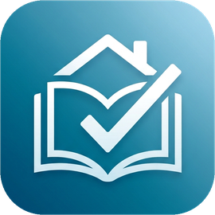

StreaksEffective November 19, 2026
Streaks: Homeschool Hours ("Streaks") is built to keep your family's records private. In short: we don't collect your data.
Everything you enter (kids' names, photos, hours, notes, events and portfolio items) is stored on your device. If you're signed in to iCloud, Apple syncs it to your own private iCloud database so it appears on your other devices. We, the developer, cannot see or access it.
Nothing. Streaks has no account, no analytics, no advertising and no tracking, and it does not send your data to any server we operate.
Data leaves the app only when you choose to share it, for example a PDF report, a CSV file or a photo using the iOS share sheet.
Streaks is meant to be used by parents and teachers. It collects no personal information from anyone, including children.
Delete a kid or subject in Settings, or delete the app. To remove synced copies, go to the Settings app › your name › iCloud › Manage Storage (wording varies by iOS version) and delete Streaks data.
If this policy changes, we'll update this page and its date. Questions: russelllgordon@gmail.com.